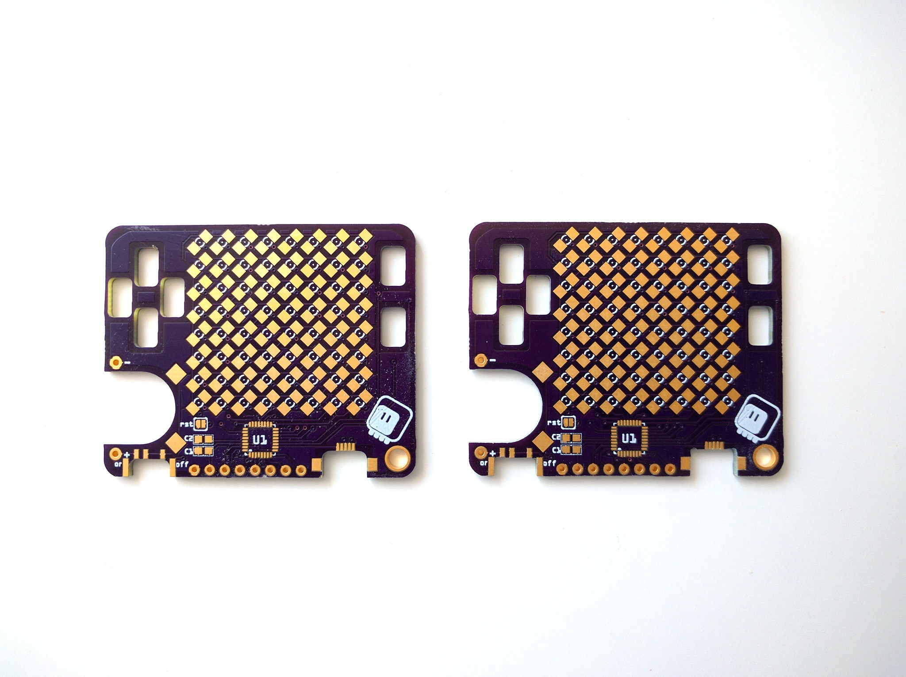
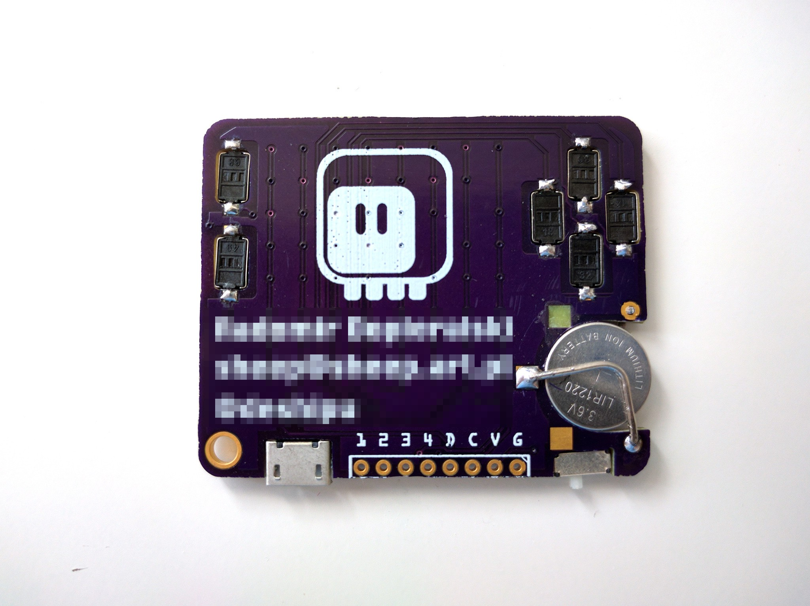
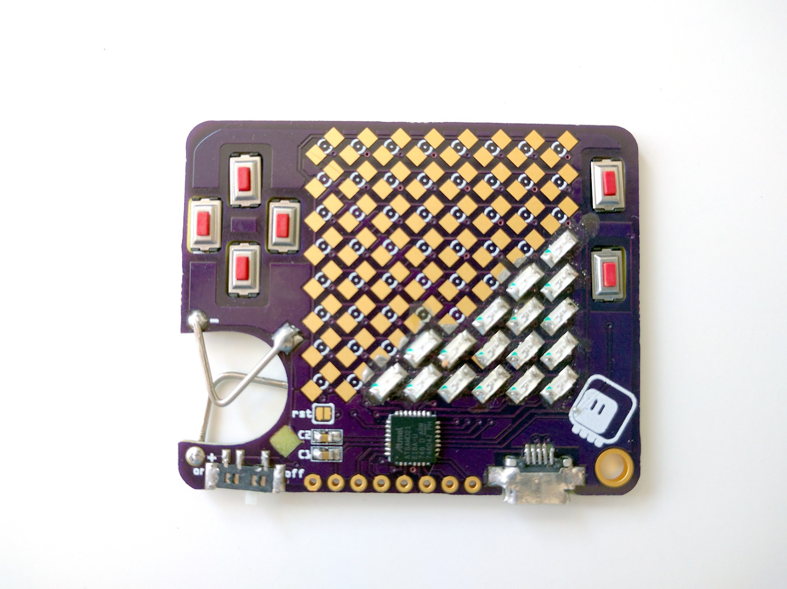

What are You Sinking About?¶
Published on 2018-08-10 in PewPew Standalone.
Today is the PCB day. A purple envelope arrived, filled with goods. But before I assemble and test the prototype #8 of the device, with all row and column pins capable of PWN, I want to finish an experiment that I described in the first log here. The business card.
In an attempt to make the device as thin as possible, I decided to try and make most of the component “sunken”. What does it mean? It means that the PCB has leaks. I mean holes. And the SMD components that would normally sit on top of the PCB instead go inside those holes, from the bottom, and are soldered to pads adjacent to those holes. Here’s a view from the back with the switches soldered:
And here’s the almost-finished device:
I still need to test the charlieplexing before I solder the rest of the LEDs, but you get the idea.
Of course this is not practical. The holes have to be manually corrected with a dremel (see the first image), because the CNC tool is a bit too big to make good corners (and because I got some sizes wrong). Then the parts need to be fit into the holes just right, and held in place while you solder them. It actually took me several tries to get a working USB socket — you can even see I stripped one of the pads, fortunately that one is unused.
So in conclusion, yes, it is possible to do, no, I wouldn’t do it for more than a single unit. It’s not practical.